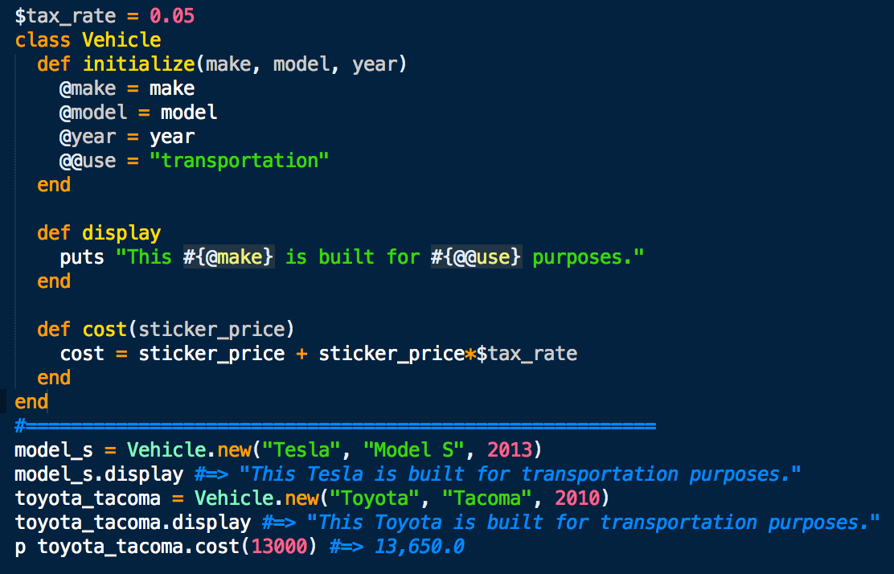
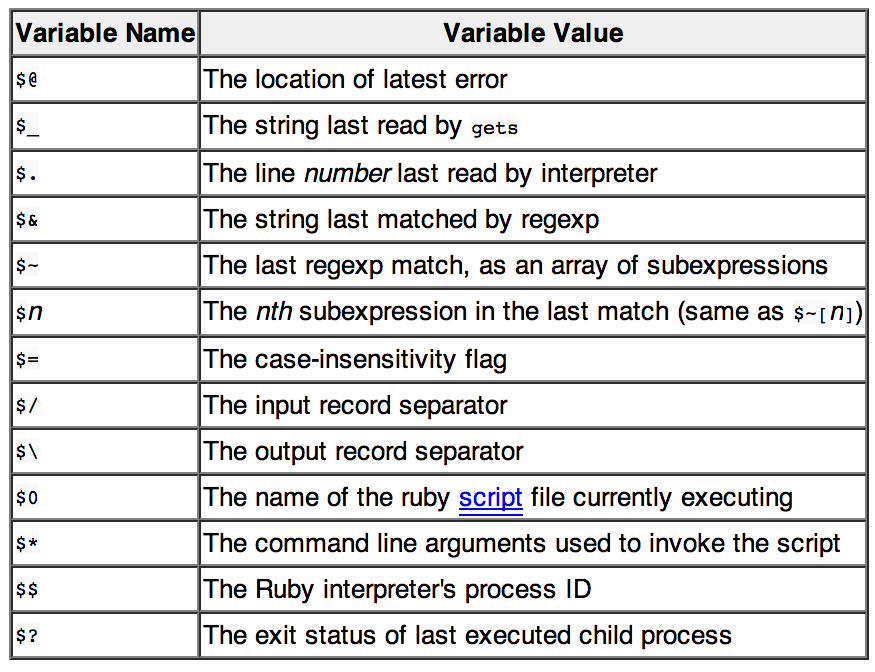

return jeffKeslin
variables and scope
For your programming convenience, Ruby has 4 distinct types of variables: local, global, instance, and class. Each of these types has a different scope which defines where in a program a variable can be accessible. Let's start with the variable with the largest scope (global) and work our way down to the variables with the least accessibility.
Global variables can be accessed from anywhere in the program. To declare a global variable, it must begin with the dollar sign ($). For example, the variable $tax_rate, is global and can be accessed anywhere in a program. Using global variables is generally discouraged except when totally necessary because it can make tracking bugs within your code difficult.
Class variables cannot be accessed anywhere, but can be accessed anywhere within a given class. The difference between a Class variable and an instance variable is that a Class variable is shared amongst all instances of a class. Therefore, when it is changed for one instance, it is changed for all of them. They are declared by using @@, for example: @@color = "red".
Instance variables are also used within a class, but this time, the value of the variable can be unique to that particular object or instance of that class. This means that changes made to this variable, only affect the particular object being manipulated. They are declared using just a single @.
Local variables have the smallest scope and can only be called within the method or loop with which they are declared. Let's look at an example where we create objects using a class called Vehicle. We'll use all four of types of variables so you can see how they work:
You'll notice we're allowed to access the global variable $tax_rate, despite that it is declared outside the Vehicle class. Also, the class variable, @@use, will be the same for any instance of Vehicle class, and the local variable cost, cannot be accessed outside of the cost method.
And just for fun, here's a table of pre-defined global variables that you can use to get information about the Ruby environment (courtesy of techtopia.com):
To learn more about variables and scope, check out the Resources page for more Ruby info or tools.
And happy coding!